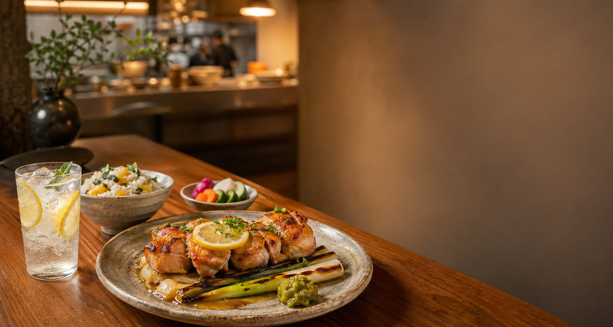

季節のごはんと炭火小皿
柚子の香り、炭の余韻、炊きたての湯気。仕事帰りにも週末の食卓にも寄り添う、小さな街角食堂です。
本日の土鍋ごはん: 新しょうがと焼き鯖
夜の席は17:30から。小皿だけの一杯利用も歓迎です。
Menu
看板
香ばしく焼いた若鶏に、柚子皮と発酵バターをのせて仕上げます。
土鍋
昆布と鯛の澄んだだしで炊く、二人前からの土鍋ごはん。
小皿
炭火でとろりと焼いた茄子に、軽やかな山椒みそを合わせます。
甘味
香ばしいほうじ茶と黒蜜、岩塩をほんの少し。
About
「柚子と灯」は、旬の食材を炭火とだしで軽やかに仕立てる食堂です。ひとりの晩ごはん、友人との小さな乾杯、家族の週末ごはん。どの時間にも、やわらかな灯りを置くような店でありたいと思っています。
Access
東京都渋谷区架空町3-12-8 灯ビル1F
架空線「花見坂駅」東口から徒歩4分
ご予約・お問い合わせ